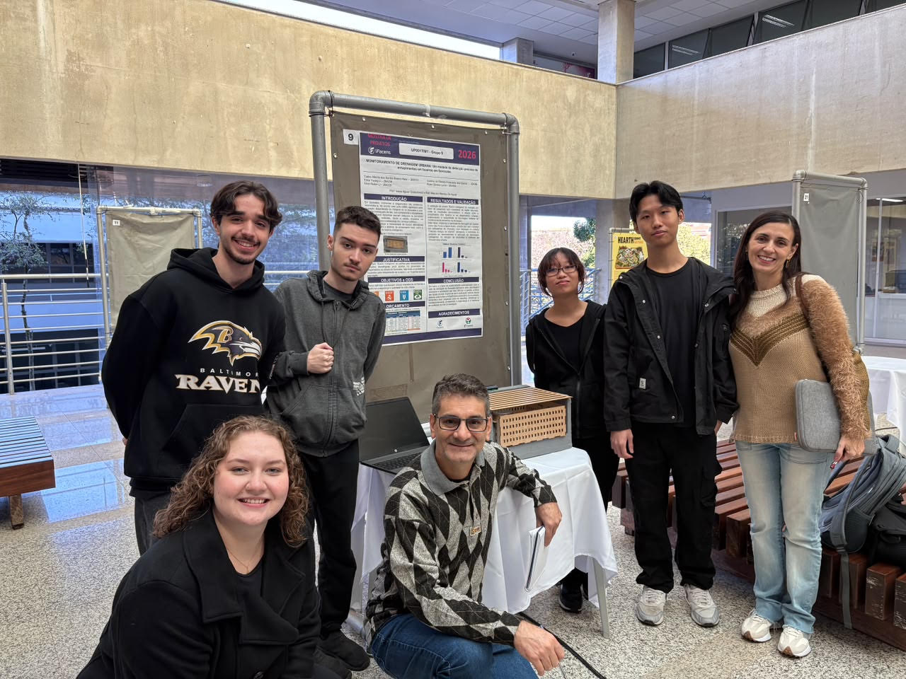

O Projeto Pluvia antecipa o alagamento antes da chuva chegar. Para o cidadão, oferece segurança e previsibilidade ao alertar quando o bueiro está obstruído e existe chance de chuva. Já para a gestão pública, possibilita a mitigação de danos e custos causados por alagamentos, transformando a manutenção corretiva dos sistemas de captação pluviométrica do local em uma manutenção preditiva. Assim, o Projeto Pluvia converte gastos emergenciais em economia estratégica, diminuindo riscos e protegendo a mobilidade urbana.

O modelo de drenagem urbana proposto tem como objetivo elevar a qualidade de vida da população sorocabana. Ao reduzir a frequência e a intensidade das enchentes, a solução minimiza prejuízos individuais, como a perda de bens (ex: casas, veículos e móveis) e a exposição a doenças; e também impactos coletivos, como danos à economia local, interrupções na mobilidade urbana, despejamento de lixo nos rios e sobrecarga dos serviços públicos. Dessa forma, contribui para uma cidade mais segura e preparada para os desafios climáticos.
A unidade curricular UPX tem como foco o desenvolvimento de competências técnicas e
socioemocionais e a ampliação da consciência socioambiental e da atitude empreendedora
do aluno por meio do desenvolvimento de soluções para desafios reais e organizações da
sociedade civil.
A UPX integra o ecossistema UniFacens, seus centros de inovação e o mercado de trabalho ao
currículo dos cursos de graduação por meio de uma narrativa inovadora e criativa dentro da
sala de aula e através do nosso ambiente virtual de aprendizagem.
Os nossos alunos são encorajados a compreender os desafios globais, a desenvolver projetos
relacionados ao tema do semestre, a colaborar em equipe, a interagir com empresas e aprimorar
as suas competências técnicas e socioemocionais.
Dentre os temas abordados em cada semestre estão: